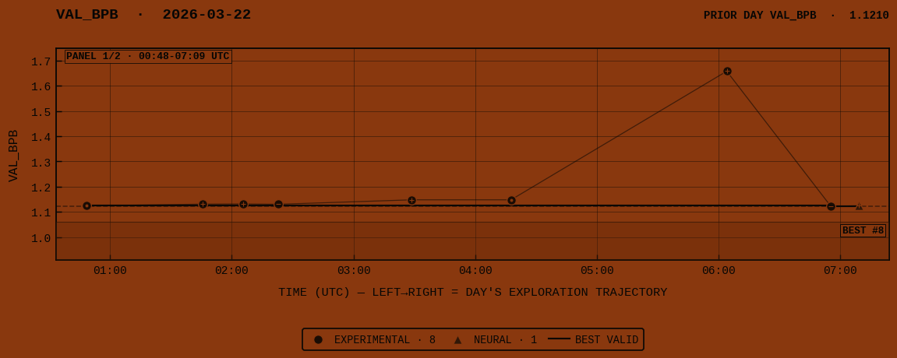
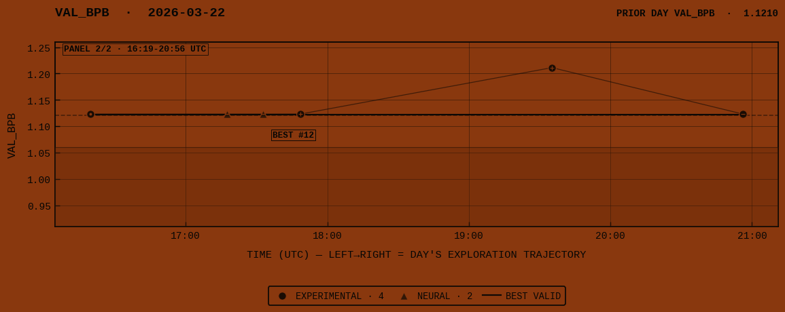

DAILY RESEARCH REPORTBACK TO MASTER SHEET2026-03-22DAILY RESEARCH REPORTBACK TO MASTER SHEET2026-03-22
DAILY RESEARCH REPORTBACK TO MASTER SHEET2026-03-22DAILY RESEARCH REPORTBACK TO MASTER SHEET2026-03-22| 2026-03-22 | 11 | 15 |
{
"date": "2026-03-22",
"fatal": 0,
"headline_metric": "val_bpb",
"raw_records": 718,
"render_records": 697,
"test_rows": 15,
"warnings": 11
}

| VAL_BPB SPREAD | n | min | median | max | download |
|---|---|---|---|---|---|
| LEADERBOARD TRANSFORMER VARIANTS | 4 | 1.1232 | 1.1233 | 1.1243 | — |
| TTT8 STRIDE-32 TEST FAMILY | 3 | 1.1301 | 1.1307 | 1.1313 | download |
| RECURSIVE WEIGHT-SHARING TRANSFORMER | 2 | 1.1478 | 1.1478 | 1.1478 | download |
| TTT-ONLY MODEL TEST | 1 | 1.1240 | 1.1240 | 1.1240 | download |
| PROGRESSIVE MLP AND FRACTAL CADENCE TESTS | 1 | 1.6575 | 1.6575 | 1.6575 | — |
| STATE-SPACE TTT VARIANT | 1 | 1.1223 | 1.1223 | 1.1223 | — |
| POST-TRAINING QUANTIZATION CALIBRATION | 1 | 1.1232 | 1.1232 | 1.1232 | download |
| CRAWLER ABLATION CONTROL SET | 1 | 1.2113 | 1.2113 | 1.2113 | — |
| OTHER | 1 | 1.1232 | 1.1232 | 1.1232 | — |
| ALL VALID | 15 | 1.1223 | 1.1243 | 1.6575 | — |
| # | TIME | HW | ABLATION | VAL_BPB | STATUS | Δ % | OPEN |
|---|---|---|---|---|---|---|---|
| 1 | 00:48 | 8×H100 | run_s1337.log (×6) | 1.1240 | OK | ↑0.3% | training_log 1training_log 2training_log 3training_log 4training_log 5training_log 6 |
| 2 | 01:45 | 8×H100 | run_s42.log (×2) | 1.1307 | OK | ↑0.9% | training_log 1training_log 2 |
| 3 | 02:05 | 8×H100 | run_s7.log | 1.1313 | OK | ↑0.9% | training_log |
| 4 | 02:22 | 8×H100 | run_s137.log | 1.1301 | OK | ↑0.8% | training_log |
| 5 | 03:28 | — | The recursive weight-sharing depth variant: 1.1478 BPB — 0.025 from world lea… | 1.1478 | OK | ↑2.4% | details |
| 6 | 04:17 | — | recursive weight-sharing transformer: Recursive Weight Sharing + MLP 4x (1.14… | 1.1478 | OK | ↑2.4% | details |
| 7 | 06:04 | — | Add fractal cadence test cadence test cadence long run (1.6575 BPB @ 3929 ste… | 1.6575 | OK | ↑47.9% | details |
| 8 | 06:55 | — | Log depth + TTT results: 1.1223 BPB (12L+TTT20ep+SAM) (×7) | 1.1223 | OK | ↑0.1% | details |
| 10 | 16:19 | — | Add 3 leapfrog variants based on PR#414 SOTA (1.1233 BPB) (×7) | 1.1233 | OK | ↑0.2% | details |
| 13 | 17:48 | — | Add v2 self-distillation variant (val_bpb=1.1233, seed 1337) (×2) | 1.1233 | OK | ↑0.2% | details |
| 14 | 19:35 | — | Log recursive weight-sharing transformer: fractal cadence test cadence test c… | 1.2113 | OK | ↑8.1% | details |
| 15 | 20:56 | — | Add seed 2024: 1.1239 BPB, 15.50 MB — 3-seed validation complete (×2) | 1.1232 | OK | ↑0.2% | details |
| # | TIME | HW | ABLATION | VAL_BPB | STATUS | Δ % | OPEN |
|---|---|---|---|---|---|---|---|
| 9 | 07:09 | — | Save pr374_throne: our #1 non-TTT record holder (1.1243 BPB) (×7) | 1.1243 | OK | ↑0.3% | details |
| 11 | 17:17 | — | Record: 11L TTT Burst + GPTQ-15 + EMA + QAT (val_bpb=1.1232, seed 1337) (×2) | 1.1232 | OK | ↑0.2% | details |
| 12 | 17:32 | — | Update submission with accurate 2-seed results and correct train_gpt.py (×2) | 1.1232 | OK | ↑0.2% | details |